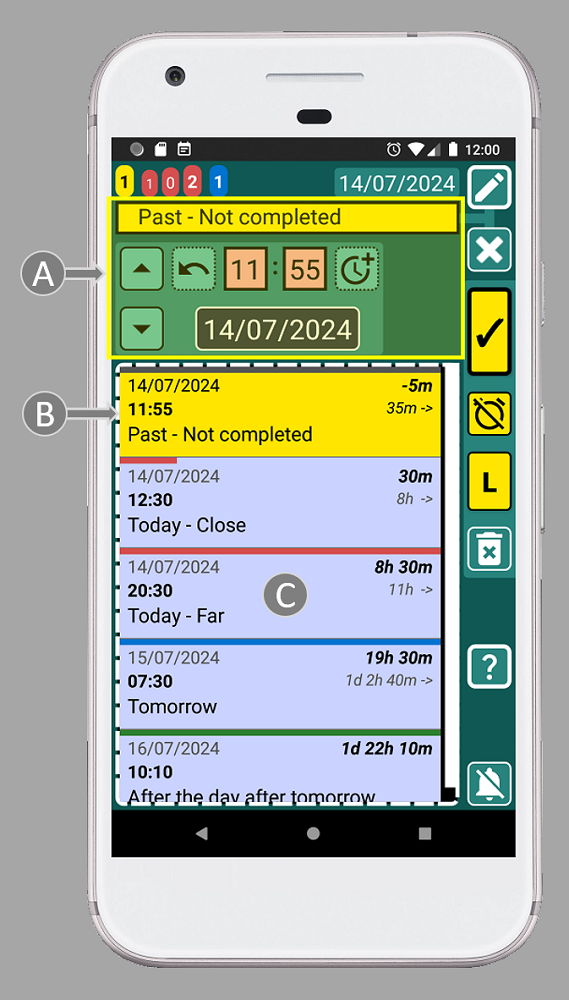
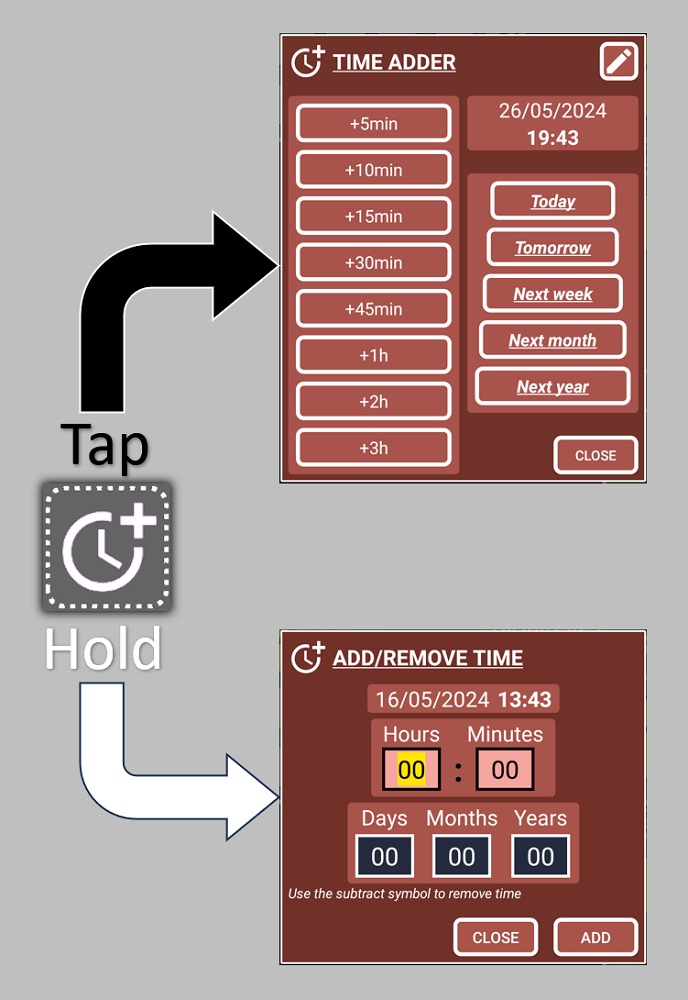

With SECURElogBook you can schedule tasks easily, fast and with perfection, because it has dedicated features to do exactly that.
First, I need to let you know a few concepts that allow the app to do that and more. Remember that SECURElogBook is not a simple to-do list. It is a flexible tool that helps you remember everything and manage your time. But also, thanks to the search system, it allows you to learn from the data you create to improve every day.
To explain the features that allow SECURElogBook to seamlessly move tasks in seconds, let’s look at this example where we are editing the “Past – Not Completed” record:

The small list with records (C) will show only records that match or follow the moment selected by time and date of the record we are editing (A). That is why, when we edit a record, the first record on the list will be always the record that we are editing (B).
Now, let’s imagine we have these records, the list in the main window (blue) shows all the records:
To create or edit records we use other windows. Teal to edit and green to create records:

When you create or edit a record, the list on those windows will update the information, every time you change the date or time. The list will show only records that match or follow the moment selected by that time and date:
SECURElogBook does not allow to have two records at the same time (use a list to have two or more records at the same time). If the time for the record you are creating or editing is already used by another record, the record buttons will turn red:
The record buttons turn red to warn you that this time is already being taken by another record. You will not be able to save or copy that record if the record buttons are red. The record blocking you from saving or copying will be the first on the list (you can move the blocking record to a different time, or you can choose another time).
The other reason for this behaviour, where the list gets updated when we change the date or time, is to filter the records by time. You can change the time to filter the records depending on the time you choose; this will allow you to schedule tasks more efficiently.
For example, if you want to create a task after 12:00, you can set the time to 12:00. This will cause the list to only display information from 12:00 onwards. Now it will be easier for you to see where you can place the new record:
You can enter the date and time manually. Or, you can use the UP/DOWN buttons, to select the time from existing records:

The UP button selects previous record time. The DOWN button selects next record time. These buttons copy the time of the first record on the list and add it to the record you are creating or editing. Then, when both records are at the same time you can add or remove time to perfectly place the record you are creating or editing:

These windows help you to add or subtract time without the possibility of making mistakes when you press or hold this button
Let's say you want to move a record so that it is at a certain time before or after another record. For example, I want to place “Take out the bin” 5min before “Meet friend at the bar”.
And yes, you can edit “Take out the bin” do a simple math and realise that you need to set the record to 12:15. But, you can do the same with any time value and without mental calculations or errors.
Let me show you!
You can practice this example by creating 3 records. Then we will move the last one 5min before to the first one.
1. Click on the record that you want to move; in this case is “Take out the bin”.
2. Because we want to move “Take out the bin” record up, we must press the UP button
This will set our record with the time of the previous record:
Notice that we cannot save/copy (as record buttons are red) because the time we set for our record 16:25 is already used by another record, the first on the list.
3. Press the UP button
Now, the record we are editing, “Take out the bin” and the record we are going to use as reference “Meet friend at the bar” are set at the same time, 12:20.
Now we can add or remove any value of time to create exactly the gap we want between those records.
4. Hold the button
Now our record is automatically set 5min before the next record:
5. To save the record and go back, press the button indicated with the yellow arrow (image above).
6. Press the back button on your phone to go back to the main window:
As we can see, we have moved the record with complete precision, quickly, without mental calculations or errors. Now the time gap between records is 5 min, and we can even see it thanks to the smart features of SECURElogBook.
With this knowledge, you will have complete control over time. Yes, this superpower can only control your time, but that is far more than most people who don't use SECURElogBook have. üòâ